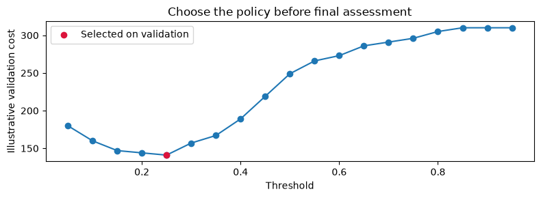
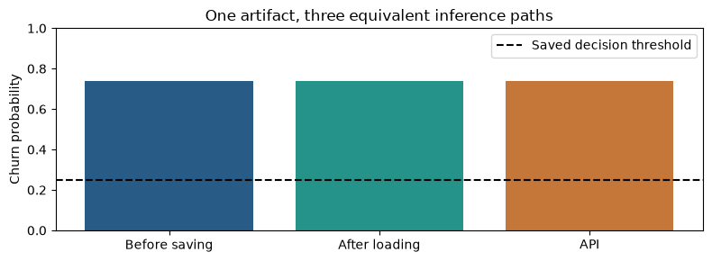

Lecture 08 / Executed results
From model to service: results
Captured from a successful run of the supplied notebook on synthetic teaching data. These are computed outputs, distinct from the conceptual illustrations. Source and dataset hashes are checked during every website build.
Read the explanation and implementation →
What to inspect. Trace the validation-selected cutoff into the saved artifact and compare identical probabilities before saving, after loading, and through the API. HTTP correctness and predictive quality are separate checks.
Computed figures


Tables and printed results
1. What crosses the boundary? · computed output
Rows: 1800
1. What crosses the boundary? · computed output
tenure_months monthly_charge support_calls contract churn 0 10 86.0045 0 annual 0 1 48 63.7697 1 monthly 0 2 42 129.0949 1 annual 0
2. Fit once, choose a policy on validation · computed output
Validation-selected threshold: 0.25
2. Fit once, choose a policy on validation · computed output
threshold cost alerts 0 0.05 180.0 236 1 0.10 160.0 198 2 0.15 147.0 173 3 0.20 144.0 128 4 0.25 141.0 101 5 0.30 157.0 87 6 0.35 167.0 67 7 0.40 189.0 47 8 0.45 219.0 35 9 0.50 249.0 23 10 0.55 266.0 16 11 0.60 273.0 11 12 0.65 286.0 6 13 0.70 291.0 5 14 0.75 296.0 4 15 0.80 305.0 1 16 0.85 310.0 0 17 0.90 310.0 0 18 0.95 310.0 0
3. Assess the frozen pipeline and save the same policy · computed output
Saved: churn-c5252101f56d4f1aaea160e1159dbf2a.joblib
3. Assess the frozen pipeline and save the same policy · computed output
roc_auc 0.764312 precision 0.464286 recall 0.625000 cost 270.000000 Name: Final test metrics, dtype: float64
4. A successful prediction before and after saving · computed output
{'before_saving': 0.7378078852870725, 'after_loading': 0.7378078852870725, 'threshold': 0.25, 'decision': 1}5. Send the same customer to the API · computed output
HTTP status: 200
{
"churn_probability": 0.7378078852870725,
"threshold": 0.25,
"prediction": 1
}
Parity verified: before saving = after loading = API probability.6. Reject an invalid request · computed output
Invalid request status: 422
{
"detail": [
{
"type": "literal_error",
"loc": [
"body",
"contract"
],
"msg": "Input should be 'monthly', 'annual' or 'two_year'",
"input": "quarterly",
"ctx": {
"expected": "'monthly', 'annual' or 'two_year'"
}
}
]
}7. Inspect the contract you will hand off · computed output
artifact_format 1
features [tenure_months, monthly_charge, support_calls,...
contract_values [monthly, annual, two_year]
positive_class 1
threshold 0.25
metrics {'roc_auc': 0.7643119164072922, 'precision': 0...
fit_rows 1080
validation_rows 270
test_rows 450
data_sha256 898c44641ba4d89be279e5739c7da2689230303499b67e...
dependency_versions {'python': '3.12.10', 'scikit_learn': '1.9.1',...
dtype: objectOptional extension: track this exact artifact with MLflow · computed output
Tracked the same saved artifact in run: a71f773c9b6c472fbca003b6684a87c9
Execution environment and provenance
{
"python": "3.12.10",
"numpy": "2.5.4",
"pandas": "2.3.3",
"scikit_learn": "1.9.1",
"xgboost": "3.4.1"
}Source hashes and output manifest